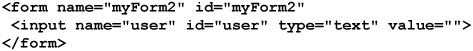
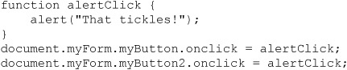

In client-side JavaScript, an object model defines the interface to the various aspects of the browser and the document that can be manipulated in code. Over time the object models supported in browsers have evolved, but for simplicity we may break down object models by browser type and version. We also note that object models may focus on accessing the features and characteristics of a browser—a Browser Object Model (BOM)—as well as the document contained in a browser—the Document Object Model (DOM). While this definition of JavaScript’s client side-object model is clear, the unfortunate reality is that the division between the DOM and the BOM has been, at least previous to the rise of HTML5, somewhat fuzzy. Even if such definitions weren’t a concern, object model support in browsers has been somewhat varied. In this chapter, we explore the evolution of JavaScript object models and the general methods of access to bring some clarity before diving into the full W3C DOM and wrappers provided by libraries.
An object model is an interface describing the logical structure of an object and the standard ways in which it can be manipulated. Figure 9-1 presents the “big picture” of all various aspects of what is considered browser-based JavaScript, including its object models. We see four primary components:
Figure 9-1 JavaScript: the “big picture”
• The core JavaScript language (for example, data types, operators, and statements)
• The core objects primarily related to data types (for example, Date, String, and Math)
• The browser objects (for example, Window, Navigator, and Location)
• The document objects (for example, Document, Form, and Image)
Until this point, we have focused primarily on the first and second aspects of JavaScript. This part of the language is actual fairly consistent between browser types and versions, and corresponds to the features defined by the ECMAScript specification (3rd and 5th editions) found at http://www.ecma-international.org/publications/standards/Ecma-262.htm.
However, the objects outside the core ECMAScript specification and their properties and methods do vary. We note in the diagram that it appears that the Browser Object Model (BOM) and Document Object Model (DOM) are somewhat intermixed. In fact, in the early days of JavaScript there simply wasn’t much of a distinction between JavaScript’s ad hoc Browser Object Model and the Document Object Model—it was just one big mess.
By studying the history of JavaScript, we can bring some order to the chaos of competing object models and understand exactly how and why the modern object models work the way they do. There have been five distinct object models used in JavaScript:
• Traditional JavaScript object model (Netscape 2 and Internet Explorer 3)
• Extended JavaScript object model (Netscape 3)—basis of DOM Level 0
• Dynamic HTML-flavored object models (Internet Explorer 4+, Netscape 4 only)
• Extended Browser Object Model + standard W3C DOM (modern browsers)
• HTML5 Object Model formalizing BOM and extending the DOM
We’ll look at each of these object models in turn and explain their historical motivations, what features and problems they introduced, and where they may be used today. Studying the evolution of JavaScript’s object models will help developers understand why things work the way they do. We strongly encourage readers not to brush off this discussion as historical and opt to immediately code to whatever the latest standard is, believing that eventually all browsers catch up in some pure standards-compliant moment of bliss. Fifteen years later we seem no closer to this point, though hope springs eternal!
If you recall the history of JavaScript presented in Chapter 1, the primary design goal of the language was to provide a mechanism to check or manipulate the contents of HTML forms before submitting them to server-side programs. Because of these modest goals, the initial JavaScript object model first introduced in Netscape 2 was rather limited, and it focused on the basic features of the browser and document. Figure 9-2 presents JavaScript’s initial object model, which is pretty similar in Netscape 2 and Internet Explorer 3.
Figure 9-2 The initial JavaScript object model
You might be curious how the various objects shown in Figure 9-2 are related to JavaScript. Well, we’ve actually used them. For example, window defines the properties and methods associated with a browser window. When we have used the JavaScript statement to create a small alert dialog, we actually invoked the alert() method of the Window object:
In fact, we could just as easily have written this to create the same window:
Most of the time, because we can infer that we are using the current Window object, it is generally omitted.
The containment hierarchy shown in Figure 9-2 should also make sense once you consider a statement like this:
This should look like the familiar output statement used to write text to an HTML document. Once again, we added in the “window.” prefix to show the hierarchy, as we tend to use just document.write() in our examples. You might be curious about what all the various objects shown in Figure 9-2 do, so in Table 9-1 we present a brief overview of the traditional browser object. As you can see, the bulk of the objects are contained within the Document object, so we’ll look at that one more closely now, but in due time all will be discussed.
Table 9-1 Overview of Core Browser Objects
NOTE The navigator object more generically should have been called “browser” or “host” and likely been the parent of window. It is interesting to call out its name and position, as it reveals both the heavy hand of Netscape in the birth of JavaScript as well as foreshadows the immense number of wrinkles in the language as it matured.
Initially, the Document object provided access to select page elements such as anchors, form fields, and links, as well as page properties such as background and text color. We will see that the structure of this object varies considerably from browser to browser, and from version to version, until stabilizing somewhat with the W3C DOM, which provides access to any aspect of a Web page. Tables 9-2 and 9-3 list those Document properties and methods, respectively, that are the “least common denominator” and available since the very first JavaScript-aware browsers. While some of these are deprecated, they all are still commonly used and will be supported for the foreseeable future. For the sake of brevity, some details and Document properties less important to the clarity of the discussion will be omitted for now.
NOTE The document.referrer attribute is spelled correctly despite the actual misspelling of the HTTP referrer header.
Table 9-2 Lowest Common Denominator Document Properties
Table 9-3 Lowest Common Denominator Document Methods
Examination of Tables 9-2 and 9-3 reveals that the early DOM was indeed very primitive. In fact, the only parts of a document that can be directly accessed are document-wide properties, links, anchors, and forms. There simply was no support for the manipulation of text or images, no support for applets or embedded objects, and no way to access the presentation properties of most elements. We’ll see that all of these capabilities were added later and are widely used today, but first let’s focus on the most basic objects and their use, as everything follows naturally. The following example shows the various document properties printed for a sample document:
ONLINE http://javascriptref.com/3ed/ch9/traditionalobjectstester.html
An example of the output of the preceding example is shown in Figure 9-3.
Figure 9-3 Basic Document object properties
NOTE You may notice that in some browsers the visited link color does not display. This is purposeful in some browsers to avoid the leakage of history information via a computed link style. This leakage is often called the “history hack.” The authors consider removing computed style access just because of this hack tactic, a piecemeal method of addressing the insecurity of the Web. The implication of such changes is that readers should be warned that, over time, JavaScript features may be eliminated due to the possibility of their exploitation.
One thing to note with this example, however, is the fact that many of the properties will not be set if you do not run this with a document containing forms, links, and so on. JavaScript will not create—or, more appropriately in programming parlance, instantiate — a JavaScript object for a markup element that is not present, while you will notice that browsers tend to define default values for certain types of properties such as text and link colors, regardless of the presence of certain HTML elements or attributes. Our main point here is to be very clear that the HTML elements have corresponding objects in the JavaScripts Document object, and that is how the two technologies interact. As an example, a <form> tag has a Form object, and if you set something on the tag it is seen in the object and vice versa. This last idea is the heart of the object model—the bridge between the world of markup in the page and the programming ideas of JavaScript. We now explore how to access and manipulate HTML markup elements from JavaScript.
TIP Given the tight interrelationship between markup and JavaScript objects, it should be no surprise that with bad HTML markup you will often run into problems with your scripts. Despite what people might tell you, you really need to know your HTML if you want to be an expert in browser-based JavaScript.
As the browser reads an HTML document and forms a parse tree, JavaScript objects are instantiated for all elements that are scriptable. Initially, the number of markup elements that were scriptable in browsers was limited, but with a modern browser it is possible to access any arbitrary HTML element. However, for now let’s concentrate on the HTML elements accessible via the traditional JavaScript object model (also known as DOM Level 0), particularly <form> and its related elements, to keep things simple. We’ll find that this simplicity will serve us well later, as the old ways don’t actually go away with the introduction of the new methods. To illustrate the access method, let’s consider a document like this:
Using the traditional JavaScript object model, we can access the <form> tags using
which is a collection that looks like an array in a basic sense. So if we were to simply look at the number of forms in the example document:
we would see the following:
Then we might access the first <form> in the document using this path-style syntax:
To see that in action, let’s alert the value of its action attribute, like so:
To access the action attribute of the second <form> tag, we would use
and so on. However, accessing window.document.forms[5] or other values would cause a problem since there are only two form objects instantiated by each of the <form> tags.
If we go back and look again at Figure 9-2, notice that the forms[] collection also contains an elements[] collection. The elements[] collection contains the various form fields such as text fields, buttons, pull-downs, and so on. It does not, however, contain other arbitrary markup elements. Following the basic containment concept to reach the first form element in the first form of the document, we would use syntax that shows this inclusion path, like so:
While this array-based access is straightforward, the major downside is that it relies on the position of the HTML tag in the document. If the tags are moved around, the JavaScript will likely break. A better approach is to rely on the name of the object.
Markup elements in a Web page really should be named to allow scripting languages to easily read and manipulate them. The basic way to attach a unique identifier to an HTML element is by using the id attribute, which is associated with nearly every HTML element. For example, to name a particular enclosed emboldened piece of text that reads “SuperImportant,” you could use the markup shown here:
Just like choosing unique variable names within JavaScript, naming tags in markup is very important since these tags create objects within JavaScript. If you have name collisions in your markup, you are probably going to break your script. Web developers are encouraged to adopt a consistent naming style and to avoid using potentially confusing names that include the names of HTML elements themselves. For example, “button” does not make a very good name for a form button, will certainly lead to confusing code, and may even interfere with scripting language access.
Before the introduction of HTML 4 and XHTML, the name attribute instead of id was used to expose items to scripting. For backward compatibility, the name attribute is defined for <a>, <applet>, <button>, <embed>, <form>, <frame>, <iframe>, <img>, <input>, <map>, <object>, <select>, and <textarea>. Notice that the occurrence of the name attribute corresponds closely to the traditional Browser Object Model.
NOTE Both <meta> and <param> support an attribute called name, but these have totally different meanings that are unrelated to script access.
Generally, it is assumed that name is always superseded by id. This is true, to some extent, but not for form fields and frame names, practically speaking. For example, with form elements the name attribute is used to determine the name-value pairs to be sent to a server-side program and should not be eliminated. Browsers do not use id in that manner. To be on the safe side, you could use name and id attributes on form elements. So, we would write the following:
Then, to access the form from JavaScript, we would use either
or simply
because the Window object can be assumed when we are referencing the current active browser window. The text field would be accessed in a similar fashion by using document.myForm.userName with the traditional path-style syntax or using a more modern DOM syntax such as this:
NOTE To ensure compatibility, having matching name and id attribute values when both are defined is a good idea. However, be careful—some tags, particularly radio buttons, must have nonunique name values, but require unique id values. Once again, this should reference that id is not simply a replacement for name; they are different in purpose. Furthermore, do not discount the old-style approach, a deep look at modern libraries shows such syntax style used for performance and ease purposes at times. Your goal should always be in favor of compatibility.
Most of the arrays in the Document object are associative in that they can be indexed with a string denoting the name of the element you wish to access, as opposed to the standard numerical approach to the arrays. The name, as we have also seen, is assigned with either HTML’s name or id attribute for the tag. Of course, many older browsers will only recognize the setting of an element’s name using the name attribute. Consider the following HTML:

You can access the form as document.forms[“myForm2”]. Further, you may use the elements[] array of the Form object to access the field as document.forms[“myForm2”] .elements[“user”]. This is often simplified as just document.myForm2 and document.myForm2.user to use a traditional tree path style.
Internet Explorer generalized these associative arrays and calls them collections in light of what later became the term under the DOM standard. Collections under JavaScript’s DOM implementation allow for the standard [ ] syntax, but also allow for syntax like document.forms.item (0) to access the first form, document.forms.item (1) to access the second, and so on. In most senses, it would seem as if collections and arrays are pretty much the same thing, and few developers end up using the item() style syntax. There are indeed some differences. For example, collections aren’t arrays, and thus standard Array methods will not work on them. However, since most people are doing simple iterations and access, this likely won’t be too much of an issue.
In today’s modern environment, we commonly see the use of the accessor method document.getElementById (id) to fetch an object. This will work on any HTML with an id value uniquely set. So given the following markup:
as before we would use
to fetch the object of interest. The DOM standard acknowledges that form fields will retain the name attribute, so we might fetch the user field using the getElementsByName (name) method as shown here:
Notice that the method is plural (elements), as there may be numerous forms in the page that have form fields with the same name value. We use simple array item access syntax to then scope to the first one, as we know it is the one we want. Alternatively, we could use the DOM’s item-accessing methods, like so:
We see that the modern DOM supports numerous ways to find objects. For example, we may find all the <input> tags in the document using
and then iterate over the collection performing various actions. In some sense, this method would allow us to create arbitrary collections to suit our needs. For example, here we create a collection of all the <p> tags in the document:
If you were concerned with the fact that <p> tags should only occur in the document body, you might even scope the search for matching elements:
The preceding example suggests that the DOM provides a degree of scoping object searches well beyond the simple path scheme in early browsers. For example, given the following document, we see five paragraph elements:
If we were interested in finding the paragraphs that are solely within the <div> tag with the id value of “note”, we might use something like
which would return a collection of two items rather than getting all the <p> tags in the document. This DOM tree scoping may remind some readers of CSS rules such as the following:
If an object model is a programmatic interface to mark up, it would seem that a well-known and understood selection syntax, as CSS provides, would be quite useful. That’s exactly what most browsers and the DOM specification now support.
Finding objects using the traditional DOM Level 0 or later, more modern, DOM implementations can be a bit cumbersome. Fortunately, libraries and the specifications themselves have stepped in to fill the gaps. Finding collections of items is quite easy. First, we see the introduction of a method such as document.getElementsByClassName (classnametofind). Given some markup like
we might fetch the corresponding objects, like so:
This would return a standard collection to loop over.
Even more interesting, we might use a CSS selector to find something of interest. For example, using the same markup we may find all the nested <span> tags with the class of interest using the following code:
Once again, a collection will be returned that we may loop over to affect various page elements.
If you sense a pattern in the examples of finding elements in the document tree in a multitude of ways, you understand what we are illustrating. We will select elements with various DOM queries and then perform actions on them like deleting or changing them. A summary of the various selection methods can be found in Table 9-4. This selection of page elements is, in fact, such a common task in JavaScript that many popular libraries implement generic “selection” methods that provide nice, shorthand method names, such as $(), to access DOM elements in flexible and powerful ways. We’ll look at this in due time; our goal here is simply initial exposure to the selection schemes. In Chapter 10, we will present these ideas in depth.
Table 9-4 Overview of DOM Object Selection Schemes
Now that we have some idea of how to access page objects, we need to see how to monitor these objects for user activity. The primary way in which scripts respond to user actions is through event handlers. An event handler is JavaScript code that is associated with a particular part of the document and a particular “event.” The code is executed if and when the given event occurs at the part of the document to which it is associated. Common events include Click, MouseOver, and MouseOut, which occur when the user clicks, places the mouse over, or moves the mouse away from a portion of the document, respectively. These events are commonly associated with form buttons, form fields, images, and links, and are used for tasks such as form field validation and rollover buttons. It is important to remember that not every object is capable of handling every type of event. The events an object can handle are largely a reflection of the way the object is most commonly used.
You have probably seen event handlers before in HTML. The following simple example shows users an alert box when they click the button:
The onclick attribute of the <input> tag is used to bind the given code to the button’s Click event. Whenever the user clicks the button, the browser sends a Click event to the Button object, causing it to invoke its onclick event handler.
How does the browser know where to find the object’s event handler? This is dictated by the part of the DOM known as the event model. An event model is simply a set of interfaces and objects that enable this kind of event handling. In most major browsers, an object’s event handlers are accessible as properties of the object itself. So instead of using markup to bind an event handler to an object, we can do it with pure JavaScript. The following code is equivalent to the previous example:
We define an anonymous function containing the code for the event handler, and then set the button’s onclick property equal to it. If we later wanted to remove it, we would set the value of the listener to null:
The previous method is fine in most cases but has some limitations, most obviously when later another script wishes to add a click handler to the same button. In effect, the direct assignment will overwrite our previous handler.
We further note what should hopefully be obvious, which is that it is not required to associate an anonymous function. For example, the following is a legitimate approach as well:

The DOM provides a much richer and more appropriate way to assign events than with direct assignment using the addEventListener (type, function, useCapture) method. The basic idea is that you fetch a DOM element and then use this method to assign the type of event “click” to a particular function to handle the event. You also should pass a third Boolean value called useCapture to indicate the direction in which events should flow. Typically, events flow upward from the trigger element, but they may flow downward from Document to the target element if the third argument to addEventListener() is set to true; otherwise, set it to false to have events handling in the bubble up phase, which is what we’ll do here. We’ll explore the specific nuances of event flow in Chapter 11, but for now let’s see a simple example that binds a button’s click event:
If we wanted to add another event handler, we would simply later issue a similar statement such as the following, causing both events to fire as expected:
To remove events using this scheme, we should invoke the
removeEventListener (type, function, useCapture) off the bound DOM element. Given the previous example, you might be tempted then to use this statement:
Unfortunately, this won’t work because we are using a different anonymous function than the bound one from before. Instead, we should initially bind the event handler to a particular function, like so:
Then later, it is easy enough to remove the listeners in a similar fashion:
A simple example of DOM events can be found online, with a more detailed discussion found in Chapter 10.
ONLINE http://javascriptref.com/3ed/ch9/eventlistener.html
Sadly, Internet Explorer browsers prior to version 9 do not support the addEventListener() syntax, but instead supported proprietary methods called attachEvent (event, function) and detachEvent (event, function). The syntax is strikingly similar, except that you no longer pass “click” but instead “onclick,” and there is no need to specify event flow, as events under older Internet Explorer have only one event flow method—bubbling. The simple example addition of an event under proprietary Internet Explorer syntax looks like this:
while the removal would look like this:
A full example can be found online.
ONLINE http://javascriptref.com/3ed/ch9/ieevents.html
Obviously, we could write a wrapper function that tries to abstract away the event-handling details. For example, here we write two methods in our namespace wrapper object JSREF for adding (addEvent) and removing (removeEvent) events regardless of the browser in play:
This would then allow us to say something like
to add an event to the button or
to remove an event from our test button. A rework of this simple example can be found online.
ONLINE http://javascriptref.com/3ed/ch9/crossbrowserevents.html
Admittedly, the wrapper is quite simple, and libraries will do a better job in ironing out little wrinkles and managing the memory problems that often ensue when using event handlers, but it does serve our purpose of illustrating the continued variation between not only browser object models but event models as well.
You can cause an event to occur on an object just as easily as you can set its handler. Objects have a method named after each event they can handle. For example, the Button object has a click() method that causes its onclick handler to execute (or to “fire,” as many say). We can easily cause the click event defined in the previous two examples to fire:
There is obviously much more to event handlers than we have described here. All major browsers implement sophisticated event models that provide developers an extensive flexibility when it comes to events. For example, if you have to define the same event handler for a large number of objects, you can bind the handler once to an object higher up the hierarchy rather than binding it to each child individually. A more complete discussion of event handlers is found in Chapter 11.
Now that we have seen all the components of the traditional object model, it is time to show how all the components are used together. As we have seen previously, by using a tag’s name or determining its position, it is fairly easy to reference an occurrence of an HTML element that is exposed in the JavaScript object model. For example, given
we would traditionally use
to access the field named userName in this form or with a more modern method:
Yet regardless of access method, the question should now be, how do you manipulate that tag’s properties? The key to understanding JavaScript’s object model is that generally HTML elements’ attributes are exposed as JavaScript object properties. So given that a text field in HTML has the basic syntax of
then, given our last example, elementObject.type references the input field’s type attribute value. To retrieve the elementObject and access the type property, we might use a traditional path such as document.myForm.userName.type or some other scheme such as document.getElementById (“userName”).type. We can take this further so that elementObject.size references its displayed screen size in characters, elementObject.value represents the value typed in, and so on. The following simple example puts everything together and shows how the contents of a form field are accessed and displayed dynamically in an alert window by referencing the fields by name:
ONLINE http://javascriptref.com/3ed/ch9/meetandgreet.html
Not only can we read the contents of page elements, particularly form fields, we can update their contents using JavaScript. Using form fields that are the most obvious candidates for this, we modify the previous example to write our response to the user in another form field:
ONLINE http://javascriptref.com/3ed/ch9/meetandgreet2.html
Instead of writing to a form field or alerting a message, we might instead output the greeting to the document itself. We’ll use the convenient innerHTML property to set the contents of an element:
ONLINE http://javascriptref.com/3ed/ch9/meetandgreet3.html
In future examples, we’ll continue to not only modify documents but change the look and style of the content. However, for now we should wind down this basic introduction with a quick tour of the evolution of the JavaScript object models.
So far, our discussion has focused primarily on the generic features common to all object models, regardless of browser version. Not surprisingly, every time a new version was released, browser vendors extended the functionality of the Document object in various ways. Bugs were fixed, access to a greater portion of the document was added, and the existing functionality was continually improved upon.
The gradual evolution of the DOM was a good thing in the sense that more recent object models allow you to carry out a wider variety of tasks more easily. However, this evolution posed, and continues to pose, major problems for Web developers. The biggest issue is that JavaScript object models of different browsers evolved in different directions. New, proprietary features were added to facilitate the realization of new ideas such as Dynamic HTML (DHTML), Ajax, and even HTML5. Whether it was premillennial Web or well into Web 2.0, Web developers have wrestled with targeting different browser object models and shifting compliance for standards such as the DOM and HTML5. We briefly discuss the past so that readers understand where we came from and preview the future with HTML5 to see that the past lives on, both in its ugliness and in its hard lessons.
The pre-W3C DOM object models quickly evolved from providing the rudimentary form field access features demonstrated earlier in the chapter into a proprietary mess before eventually returning to some sanity. We divide the early object models into the following groups:
• Traditional object model (Netscape 2 and Internet Explorer 3)
• Extended object model (Netscape 3)
• DHTML object models (Netscape 4, Internet Explorer 4+)
The traditional object model included support for form field manipulation and basic page details. It was shown visually in Figure 9-2 and detailed in Table 9-1. Internet Explorer 3 supported pretty much the same model as Netscape 2, although it added a frames[] collection under the Document object. This collection contained all the instances of objects corresponding to the <iframe> tags in the document. A visual representation of the Internet Explorer 3 object model can be found in Figure 9-4.
Figure 9-4 Internet Explorer’s slightly modified traditional model
For the short period of time when Netscape 2 and Internet Explorer 3 coexisted as the latest versions of the respective browsers, object models were in a comfortable state of unity. It wouldn’t last long.
Netscape 3’s extended object model opened the door for the first primitive DHTML-like applications. It exposes more of document content to scripts by providing the ability to access embedded objects, applets, plug-ins, and images. This object model is shown in Figure 9-5, and the major additions to the Document object are listed in Table 9-5.
Figure 9-5 Netscape 3’s extended traditional object model
Table 9-5 Collections Introduced by Netscape 3
NOTE The Netscape 3 object model without the embeds[] and plugins[] collections is the core of the DOM Level 0 standard and thus is quite important to know.
The DOM of version 4 browsers marks the point at which support for so-called Dynamic HTML (DHTML) begins. Outside of swapping images in response to user events, there was little one could do to bring Web pages alive before Netscape 4. Major changes in this version include support for the proprietary <layer> tag, additions to Netscape’s event model, as well as the addition of Style objects and the means to manipulate them. Figure 9-6 shows the essentials of Netscape 4’s object model, and the most interesting new properties of the Document object are listed in Table 9-6 and shown in Figure 9-6.
Table 9-6 Overview of DOM Object Selection Schemes
Figure 9-6 Netscape 4’s not soon enough forgotten object model
Fortunately for us, today most of the aspects of the Netscape 4 object model are regulated to mere historical footnotes in Web development. However, Microsoft’s contribution to the DHTML wars has lived on.
Like version 4 of Netscape’s browser, Internet Explorer 4 lays the foundations for DHTML applications by exposing much more of the page to JavaScript. In fact, it went much further than Netscape 4 by representing every HTML element as an object in a collection called document.all[]. Of course, it does so in a manner incompatible with Netscape 4’s object model, so this generation of object models thrust JavaScript developers into the world of handling significant variations across browsers. The core object model of Internet Explorer 4 is shown in Figure 9-7.
Figure 9-7 Internet Explorer 4+ object model
Table 9-7 Collections Introduced in Internet Explorer 4+
Inspection of Figure 9-7 reveals that Internet Explorer 4 supports the basic object model of Netscape 2 and Internet Explorer 3, plus most of the features of Netscape 3 and many of its own features. Table 9-7 lists some important new properties introduced in Internet Explorer 4.
After the initial browser wars, the browsers continued to evolve albeit a bit slower. In fact, the Internet Explorer 5.x and 6.x DOM is very similar to that of Internet Explorer 4. New features include an explosive rise in the number of properties and methods available in the objects of the DOM and proprietary enhancements allowing the development of reusable DHTML components. Internet Explorer 5.5 continued the trend of new features, and by Internet Explorer 6 we see that Internet Explorer implemented significant portions of the W3C DOM. Internet Explorer 7 and 8 continued the trend with some fixes, though Internet Explorer 9 moved radically toward more standards support. However, regardless of version, the Internet Explorer browsers continue to support all of the old features and developers continue to use them.
The Netscape evolution ended at Navigator 4 and started over again with Netscape 6, following a pure W3C DOM style. This browser later evolved into Firefox. The WebKit engine that powers Safari and Chrome, as well as the Opera browser, focused more on a W3C domain standard. However, it should be noted that all of these standards-focused browsers support the traditional object models, as well as many Internet Explorer proprietary features.
What is often misunderstood by many JavaScript aficionados is what standards compliance actually means. Close inspection of browsers’ JavaScript and DOM implementations shows that gaps in execution are there and that there is plenty of room for interpretation of meaning at times. Furthermore, innovation continues and browser vendors introduce features to gain new users or excite developers. It is interesting to observe the rancor that some professionals place on the effects of the free market on standards. Innovation is somewhat inevitable outside the standards track, and what initially is maligned as proprietary often becomes a de facto or approved standard later on. For example, Internet Explorer’s innerHTML property was initially widely scorned, but today it is ubiquitous in Web development, though often hidden in a library. Apple’s Safari first implemented the <canvas> tag and its related API and was harassed for building proprietary features, and now the technology is considered open. Ajax was introduced via Microsoft’s proprietary XMLHttpRequest object, and on and on the examples go. Today, most of these ideas are standard under HTML5 or related specifications. Given this pattern, readers are encouraged to sit out the heated debates and figure out how to make new and motivating JavaScript features work now and into the future, because some nirvana of perfect specification compliance across browsers is quite unlikely, if history is any guide. In fact, we’ll demonstrate this idea in Chapter 10 as we explore the standard DOM Level 1 and DOM Level 2 APIs and reveal that, even here, with a standard browser details still abound. Libraries often try to mask these differences; however, they do continue to exist. This suggests to us that, underneath it all, the more things change, the more they stay the same—at least as far as JavaScript variability is concerned.
This chapter gives a basic introduction to client-side JavaScript object models. We studied the traditional DOM’s containment hierarchy but also presented other access schemes such as getElementById(), getElementsByName(), getElementsByClassName() and querySelectorAll(). We briefly demonstrated how to tie together object access and event models to make a small Web application. We spent some time discussing the JavaScript object model to explain how it has evolved over time so that the wrinkles of JavaScript coding seem a bit more purposeful, but also to explain the basis of DOM Level 0. The chapter also illustrated the divergent and incompatible nature of different browsers’ object and event implementations and demonstrated simple ways we might abstract them away. In Chapter 10, we continue our exploration of Web page manipulation by covering the W3C DOM API in great detail and follow with an in-depth event discussion. Once all this ground work is in place, we can discuss applied JavaScript and how libraries may be employed to make coding JavaScript more fun and productive.